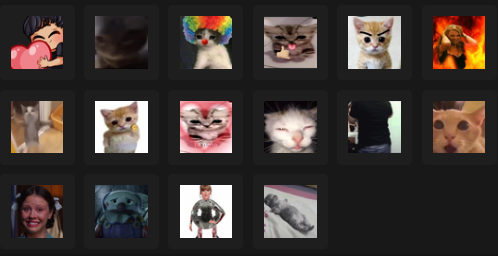
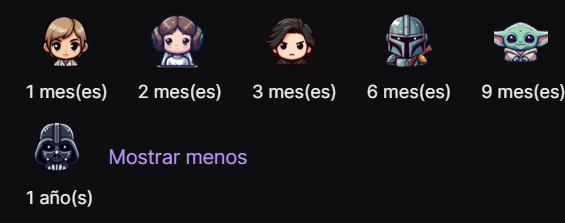

ElPinshiCarlitos ❤️
Carlos o Carlitos, es un estudiante de psicologia, fan de Star Wars, pokemon, Taylor Swift y tambien hacer streams en sus tiempos libres.
Si lo que prefieres son los gameplays, el contenido de Carlos es el mejor para ti, desde fornite, overwatch, valorant, entre otros juegos. Es el streamer con mas horas stremeadas en cada stream, puede de pronto hacerse un 12hr sin problema alguno, asi que es tiempo de diversion, gameplay y buena musica asegurada.
La puedes encontrar en twitch con el siguiente enlace: Click aqui
Al suscribirte al canal de Carlos puedes recibir beneficio como lo son:
-
Emotes
-
Insignias personalizadas
-
Ver el stream sin anuncios
-
Poder hablar en ocaciones donde se active el modo suscriptores
Emotes del canal

Insignias de suscripción
Estas cambian cada cierta cantidad de meses para reflejar el tiempo de suscripcion acumulado en el canal
